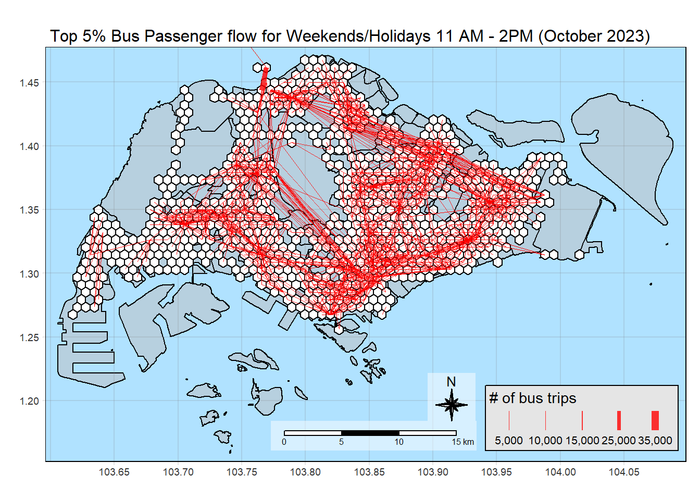

Applied Spatial Interaction Models: A case study of Singapore public bus commuter flows
1 Background
The scenario highlights the challenges in urban mobility, specifically understanding commuting patterns and the impact of public transportation changes. Traditional methods like commuter surveys are outdated and inefficient. The focus shifts to leveraging digital infrastructure data, such as GPS and SMART card usage, for more dynamic and insightful analysis.The exercise is motivated by two factors: the underutilization of available open data for policy making and the need for practical research in geospatial data science and analysis (GDSA). The task involves using GDSA to integrate diverse data sources, building spatial interaction models to understand public bus transit patterns. This approach aims to provide more effective tools for urban planning and decision-making.
2 The Data
Open Government Data
For the purpose of this assignment, data from several open government sources will be used:
Passenger Volume by Origin Destination Bus Stops, Bus Stop Location, Train Station and Train Station Exit Point, just to name a few of them, from LTA DataMall.
Master Plan 2019 Subzone Boundary, HDB Property Information, School Directory and Information and other relevant data from Data.gov.sg.
hexagon, a hexagon layer of 250m (this distance is the perpendicular distance between the centre of the hexagon and its edges.) should be used to replace the relative coarse and irregular Master Plan 2019 Planning Sub-zone GIS data set of URA.
other available styles are: "white", "gray", "cobalt", "col_blind", "albatross", "beaver", "bw", "classic", "watercolor"
set.seed(1234)
4 Data Preparation
4.1 Importing the OD data
Firstly, we will import the Passenger Volume by Origin Destination Bus Stops data set downloaded from LTA DataMall by using read_csv() of readr package.
Rows: 5694297 Columns: 7
── Column specification ────────────────────────────────────────────────────────
Delimiter: ","
chr (5): YEAR_MONTH, DAY_TYPE, PT_TYPE, ORIGIN_PT_CODE, DESTINATION_PT_CODE
dbl (2): TIME_PER_HOUR, TOTAL_TRIPS
ℹ Use `spec()` to retrieve the full column specification for this data.
ℹ Specify the column types or set `show_col_types = FALSE` to quiet this message.
kable(head(odbus))
YEAR_MONTH
DAY_TYPE
TIME_PER_HOUR
PT_TYPE
ORIGIN_PT_CODE
DESTINATION_PT_CODE
TOTAL_TRIPS
2023-10
WEEKENDS/HOLIDAY
16
BUS
04168
10051
3
2023-10
WEEKDAY
16
BUS
04168
10051
5
2023-10
WEEKENDS/HOLIDAY
14
BUS
80119
90079
3
2023-10
WEEKDAY
14
BUS
80119
90079
5
2023-10
WEEKDAY
17
BUS
44069
17229
4
2023-10
WEEKENDS/HOLIDAY
17
BUS
20281
20141
1
4.2 Importing Geospatial data into R
For the purpose of this exercise, three geospatial data will be used first. They are:
BusStop: This data provides the location of bus stop as at last quarter of 2023.
MPSZ-2019: This data provides the sub-zone boundary of URA Master Plan 2019.
Hexagon: analytical hexagon data of 375m (this distance is the perpendicular distance between the centre of the hexagon and its edges) to represent the traffic analysis zone (TAZ).
Now that we have hexagons properly generated, we will assign id for each hexagon to be used as a unique identifier. We will store this id under the HEX_ID column, and can be used in joining data frames.
We only need the data for the weekend morning peak period, which is from 11 AM - 2 PM on weekends and holidays. As such, we will filter the data for the relevant hours.
`summarise()` has grouped output by 'ORIGIN_PT_CODE'. You can override using
the `.groups` argument.
kable(head(od_trips))
ORIG_BUS_STOP_N
DEST_BUS_STOP_N
TRIPS
01012
01112
204
01012
01113
129
01012
01121
95
01012
01211
91
01012
01311
152
01012
01559
5
rm(odbus)
To connect the trip data to the their corresponding hexagon, we need to create a lookup table. This will serve as a glue in associating the aspatial od_trips data frame to the honeycomb data frame.
Warning in inner_join(., bs_hex, by = c(ORIG_BUS_STOP_N = "BUS_STOP_N")): Detected an unexpected many-to-many relationship between `x` and `y`.
ℹ Row 25339 of `x` matches multiple rows in `y`.
ℹ Row 3057 of `y` matches multiple rows in `x`.
ℹ If a many-to-many relationship is expected, set `relationship =
"many-to-many"` to silence this warning.
Warning in inner_join(., bs_hex, by = c(DEST_BUS_STOP_N = "BUS_STOP_N")): Detected an unexpected many-to-many relationship between `x` and `y`.
ℹ Row 186 of `x` matches multiple rows in `y`.
ℹ Row 3146 of `y` matches multiple rows in `x`.
ℹ If a many-to-many relationship is expected, set `relationship =
"many-to-many"` to silence this warning.
kable(head(od_trips_w_hex))
ORIG_BUS_STOP_N
DEST_BUS_STOP_N
TRIPS
ORIG_HEX_ID
DEST_HEX_ID
01012
01112
204
H0518
H0530
01012
01113
129
H0518
H0530
01012
01121
95
H0518
H0553
01012
01211
91
H0518
H0553
01012
01311
152
H0518
H0564
01012
01559
5
H0518
H0553
Aggregating data by hexagon
Next, we will perform aggregations by ORIG_HEX_ID and DEST_HEX_ID to have an aggregated sum of trips by hexagon instead of bus stops.
First, we will generate the flow lines using od2line(). honeycomb will be supplied as the zone as it contains the hexagons we are using as the traffic analysis zones.
invalid_geoms <-which(!st_is_valid(mpsz))# If there are invalid geometries, fix themif(length(invalid_geoms) >0) { mpsz[invalid_geoms, ] <-st_make_valid(mpsz[invalid_geoms, ])}
Next, we will prepare the data needed for spatial interaction modelling. Some of these are straightforward to get, especially those of attractiveness variables. Additional steps are needed for more complex data sets, like those needed for propulsiveness variables. We will derive those in a separate section.
6.1 Attractiveness variables
We will first initiate attractiveness from honeycomb.
attractiveness <- honeycomb
Because not all of the st_cos(x) == st_crs(y) are ture, it’s crucial for all datasets to be in the same CRS before performing spatial operations like intersections. The next steps will all tackle this problem.
Warning in inner_join(., bs_hex, by = join_by(DEST_BUS_STOP_N == BUS_STOP_N)): Detected an unexpected many-to-many relationship between `x` and `y`.
ℹ Row 186 of `x` matches multiple rows in `y`.
ℹ Row 3146 of `y` matches multiple rows in `x`.
ℹ If a many-to-many relationship is expected, set `relationship =
"many-to-many"` to silence this warning.
New names:
Rows: 12442 Columns: 37
── Column specification
──────────────────────────────────────────────────────── Delimiter: "," chr
(18): blk_no, street, residential, commercial, market_hawker, miscellane... dbl
(19): ...1, max_floor_lvl, year_completed, total_dwelling_units, 1room_s...
ℹ Use `spec()` to retrieve the full column specification for this data. ℹ
Specify the column types or set `show_col_types = FALSE` to quiet this message.
• `` -> `...1`
tm_shape(mpsz) +tm_polygons("green", title ="Singapore Boundary", alpha =0.5) +tm_shape(honeycomb) +tm_polygons(col ="white", title ="Hexagons", alpha =1) +tm_layout(main.title ="Map of HDB Blocks in Singapore",main.title.position ="center",main.title.size =1.0,legend.height =0.35, legend.width =0.35,frame =TRUE) +tm_compass(type="8star", size =2, bg.color ="white", bg.alpha =0.5) +tm_scale_bar(bg.color ="white", bg.alpha =0.5) +tm_shape(hdb_sf) +tm_dots(col ="red", size =0.001, title ="HDB Blocks") +tm_grid(alpha =0.2)
7.2 Adding HDB_COUNT
This variable will contain the number of HDB blocks in a zone. We will use the same methods to count the number locations in the zone, by using lengths() and st_intersects().
We will use this as attractiveness variable, and will include all HDB block types (commercial, hawker, residential) as all of them are attractive destinations for eating out, meeting family/friends, and errands.
While HDB_COUNT can be a population proxy, we need to consider that HDB blocks have different sizes. For example, taller and wider blocks may have more units compared to shorter blocks, and therefore higher population.
Now that we have the attractive and propulsive forces, we can finally prepare the data for the distance decay component of the model.
9.1Generating distance matrix
We will use spDists() to generate the matrix from our honeycomb, which requires a Spatial data frame. We also need to name the columns and rows to the corresponding HEX_ID of the hexagons.
ORIG_HEX_ID DEST_HEX_ID TRIPS DISTANCE
H0518 : 307 H0518 : 314 Min. : 1.00 Min. : 200
H0728 : 291 H0540 : 300 1st Qu.: 3.00 1st Qu.: 2704
H0521 : 285 H0530 : 297 Median : 12.00 Median : 5250
H0530 : 282 H0728 : 297 Mean : 96.74 Mean : 6117
H0491 : 278 H0521 : 290 3rd Qu.: 48.00 3rd Qu.: 8518
H0651 : 268 H0450 : 280 Max. :33266.00 Max. :24784
(Other):58135 (Other):58068
ORIG_HDB_RESIDENT_COUNT ORIG_BUS_ALIGHT_COUNT DEST_BUS_STOP_COUNT
Min. : 0 Min. : 0 Min. : 1.00
1st Qu.: 0 1st Qu.: 3459 1st Qu.: 5.00
Median : 932 Median : 8693 Median : 8.00
Mean :1850 Mean : 14148 Mean : 7.96
3rd Qu.:3351 3rd Qu.: 16757 3rd Qu.:10.00
Max. :7946 Max. :108111 Max. :19.00
DEST_ENTERTN_COUNT DEST_F_AND_B_COUNT DEST_LEISURE_COUNT DEST_RETAIL_COUNT
Min. :0.0000 Min. : 0.000 Min. : 0.000 Min. : 0.00
1st Qu.:0.0000 1st Qu.: 0.000 1st Qu.: 0.000 1st Qu.: 7.00
Median :0.0000 Median : 0.000 Median : 1.000 Median : 31.00
Mean :0.3442 Mean : 5.696 Mean : 2.336 Mean : 98.31
3rd Qu.:0.0000 3rd Qu.: 2.000 3rd Qu.: 3.000 3rd Qu.: 110.00
Max. :9.0000 Max. :133.000 Max. :41.000 Max. :1678.00
DEST_TRAIN_EXITS_COUNT DEST_HDB_COUNT geometry
Min. : 0.000 Min. : 0.00 LINESTRING :59846
1st Qu.: 0.000 1st Qu.: 0.00 epsg:NA : 0
Median : 0.000 Median : 12.00 +proj=tmer...: 0
Mean : 1.375 Mean : 20.81
3rd Qu.: 2.000 3rd Qu.: 36.00
Max. :13.000 Max. :103.00
Now we will make finishing touches on SIM_data , so that they are compatible with modeling. We need to remove the 0’s as we will apply log function to them, which will result to undefined.
invalid_geoms <-which(!st_is_valid(mpsz))# If there are invalid geometries, fix themif(length(invalid_geoms) >0) { mpsz[invalid_geoms, ] <-st_make_valid(mpsz[invalid_geoms, ])}
tm_shape(mpsz) +tm_polygons("grey", title ="Singapore Boundary", alpha =0.5) +tm_shape(honeycomb) +tm_polygons(col ="white", title ="Hexagons", alpha =1) +tm_shape(flowlines_no_intra %>%filter(TRIPS >376)) +tm_lines(lwd ="TRIPS",style ="quantile",col ="red",scale =c(0.1, 1, 3, 5, 7),title.lwd ="# of bus trips",alpha =0.8) +tm_layout(main.title ="Top 5% Bus Passenger flow for Weekends/Holidays 11 AM - 2PM (October 2023)",main.title.position ="center",main.title.size =1.0,legend.height =0.35, legend.width =0.35,frame =TRUE) +tm_compass(type="8star", size =2, bg.color ="white", bg.alpha =0.5) +tm_scale_bar(bg.color ="white", bg.alpha =0.5) +tm_grid(alpha =0.2)
Warning in g$scale * (x/maxW): longer object length is not a multiple of
shorter object length

Insights
It is notable that the thickest flow lines are for relatively short distances, like the bus rides to and from Woodlands Checkpoint to Kranji Station. We can notice these thick lines on busy zones where lines converge as well.
Although not as thick, we can notice longer long lines on the map. This can indicate people more willing to travel longer distances over the weekend for recreation and meeting family and friends. This also means that a location being close by is not the only motivator for people to visit a place. Spatial interaction model can reveal more patterns to this.
12 Plot Chart: TRIPS & DISTANCE
ggplot(SIM_data,aes(x = DISTANCE, y = TRIPS)) +geom_point() +geom_hline(yintercept =376.25, color ="red", linetype ="dashed") +annotate("text", x =20000,y =600, label ="95th percentile",hjust =-0.1, color ="red", size =3) +geom_hline(yintercept =1510, color ="blue", linetype ="dashed") +annotate("text", x =20000,y =1800, label ="99th percentile",hjust =-0.1, color ="blue", size =3) +labs(title ="Number of Trips as a Function of Distance",x ="Distance (m)",y ="Number of Trips")
Plotting it in a log scale shows a more linear relationship.
ggplot(SIM_data,aes(x =log(DISTANCE), y =log(TRIPS))) +geom_point() +geom_smooth(method = lm)
`geom_smooth()` using formula = 'y ~ x'
Insights
The maximum number of tripsexponentially decrease as the distance increases, which means that generally, the farther the distance, the less trips there are.
However, some outliers can be observed like some zone pairs with almost 20km distance between them having close to 99th percentile of TRIP values. In these zone pairs, there could be strong propulsive or attractive forces attracting passengers to ride the bus between those zones.
13 Visualize propulsive forces
plot_propulsive <-function(var_name, title_comp) {tm_shape(mpsz) +tm_polygons("gray", title ="Singapore Boundary") +# Adding this layer underneath propulsiveness as we removed 0s. from the map# so it won't skew the legendtm_shape(honeycomb) +tm_polygons(col ="white") +tm_shape(propulsiveness %>%filter(if_any(var_name, ~. >=1))) +tm_polygons(var_name, palette ="Blues", style ="quantile") +tm_shape(flowlines_no_intra %>%filter(TRIPS >376)) +tm_lines(lwd ="TRIPS",style ="quantile",col ="orange",scale =c(0.1, 1, 3, 5, 7, 10),title.lwd ="# of bus trips",n =6,alpha =0.5) +tm_layout(main.title =paste("Top 5% Bus Passenger Flows and", title_comp),main.title.position ="center",main.title.size =1.0,legend.height =0.35, legend.width =0.35,frame =TRUE) +tm_scale_bar(bg.color ="white", bg.alpha =0.7, position =c("right", "top")) +tm_compass(type="8star", size =2, bg.color ="white",bg.alpha =0.5, position =c("right", "top")) +tm_grid(alpha =0.2) +tm_credits("*Passenger data from weekend/holidays 11AM - 2PM\n(October 2023)",bg.color ="white", bg.alpha =0.7,position =c("left", "bottom"))}
Warning: Using an external vector in selections was deprecated in tidyselect 1.1.0.
ℹ Please use `all_of()` or `any_of()` instead.
# Was:
data %>% select(var_name)
# Now:
data %>% select(all_of(var_name))
See <https://tidyselect.r-lib.org/reference/faq-external-vector.html>.
Warning in g$scale * (w_legend/maxW): longer object length is not a multiple of
shorter object length
Warning in g$scale * (x/maxW): longer object length is not a multiple of
shorter object length
13.2 Transfer from BUS
plot_propulsive("BUS_ALIGHT_COUNT", "Transfer by BUS")
Warning in g$scale * (w_legend/maxW): longer object length is not a multiple of
shorter object length
Warning in g$scale * (x/maxW): longer object length is not a multiple of
shorter object length
Insights
Upon visual inspection, HDB population and bus alights from zones correspond closely with our flowlines.
14 Visualize attractive forces
In this section, we plot attractive forces in their own choropleth maps to see if the top 5% flows correspond to areas we hypothesize have high attractive forces.
plot_attractive <-function(var_name, title_comp) {tm_shape(mpsz) +tm_polygons("gray", title ="Singapore Boundary") +# Adding this layer underneath attractiveness as we removed 0s. from the map# so it won't skew the legendtm_shape(honeycomb) +tm_polygons(col ="white") +tm_shape(attractiveness %>%filter(if_any(var_name, ~. >=1))) +tm_polygons(var_name, palette ="Purples", style ="quantile") +tm_shape(flowlines_no_intra %>%filter(TRIPS >376)) +tm_lines(lwd ="TRIPS",style ="quantile",col ="red",scale =c(0.1, 1, 3, 5, 7, 10),title.lwd ="# of bus trips",n =6,alpha =0.5) +tm_layout(main.title =paste("Top 5% Bus Passenger Flows and", title_comp),main.title.position ="center",main.title.size =1.0,legend.height =0.35, legend.width =0.35,frame =TRUE) +tm_scale_bar(bg.color ="white", bg.alpha =0.7, position =c("right", "top")) +tm_compass(type="8star", size =2, bg.color ="white",bg.alpha =0.5, position =c("right", "top")) +tm_grid(alpha =0.2) +tm_credits("*Passenger data from weekend/holidays 11AM - 2PM\n(October 2023)",bg.color ="white", bg.alpha =0.7,position =c("left", "bottom"))}
14.1 Busstops
plot_attractive("BUS_STOP_COUNT", "Number of Busstops")
Warning in g$scale * (w_legend/maxW): longer object length is not a multiple of
shorter object length
Warning in g$scale * (x/maxW): longer object length is not a multiple of
shorter object length
14.2 HDB
plot_attractive("HDB_COUNT", "Number of HDB")
Warning in g$scale * (w_legend/maxW): longer object length is not a multiple of
shorter object length
Warning in g$scale * (x/maxW): longer object length is not a multiple of
shorter object length
14.3 Entertainment
plot_attractive("ENTERTN_COUNT", "Number of Entertainment Items")
Warning in g$scale * (w_legend/maxW): longer object length is not a multiple of
shorter object length
Warning in g$scale * (x/maxW): longer object length is not a multiple of
shorter object length
14.4 F&B
plot_attractive("F_AND_B_COUNT", "Number of F&B Outlets")
Warning in g$scale * (w_legend/maxW): longer object length is not a multiple of
shorter object length
Warning in g$scale * (x/maxW): longer object length is not a multiple of
shorter object length
14.5 Leisure&Recreation
plot_attractive("LEISURE_COUNT", "Number of Leisure&Recreation Items")
Warning in g$scale * (w_legend/maxW): longer object length is not a multiple of
shorter object length
Warning in g$scale * (x/maxW): longer object length is not a multiple of
shorter object length
14.6 Retail
plot_attractive("RETAIL_COUNT", "Number of Retail")
Warning in g$scale * (w_legend/maxW): longer object length is not a multiple of
shorter object length
Warning in g$scale * (x/maxW): longer object length is not a multiple of
shorter object length
Insights
There are less location types than the others, like entertainment and leisure locations.
There are also location types that are heavily concentrated in some zones, like the entertainment and F&B, which are heavily concentrated around the Orchard area. Conversely, there are much less HDBs in Orchard area. Even though the flowlines are not thick in this area, there are many flowlines, although thin. This means people are coming from various parts of Singapore.